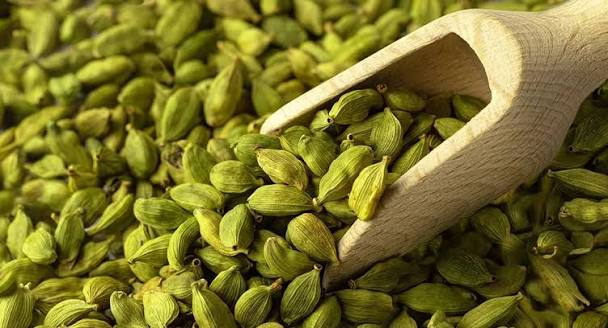
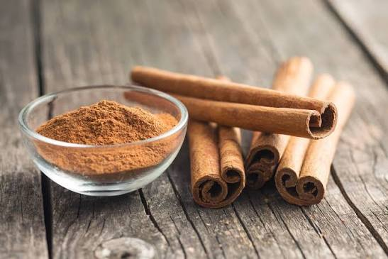

✿
Nature's goodness
Spices selected for their natural colour, aroma and character.
THE FLAVOUR OF KERALA
Discover carefully selected spices inspired by Kerala's rich spice-growing heritage. Fresh aroma, bold flavour, and goodness in every pinch.
Naturally aromatic · Carefully packed · Full of flavour

WHY MALABAR ROOTS?
Little ingredients that make every meal memorable.
Spices selected for their natural colour, aroma and character.
Distinctive fragrance and taste to bring your favourite recipes to life.
Inspired by the spice gardens and food traditions of God's Own Country.
FROM OUR SPICE COLLECTION
Three favourites for a little extra magic in every dish.



ROOTED IN KERALA
Kerala has shared its spices with the world for generations. At Malabar Roots, we celebrate that heritage by bringing the familiar aromas and flavours of the region to your kitchen.
From everyday meals to special family recipes, our goal is to help you enjoy the warmth and character of Kerala cooking.
Know MoreLET'S TALK SPICES
Contact us for product details, bulk orders or other enquiries.
Enquire Now